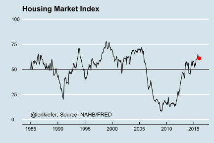
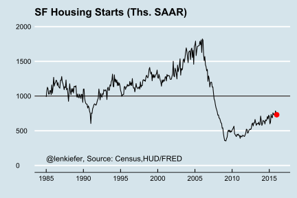
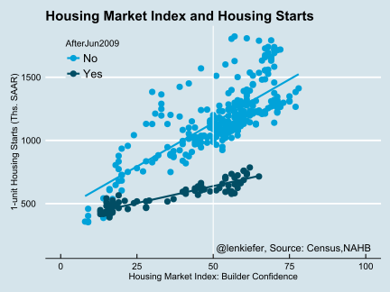
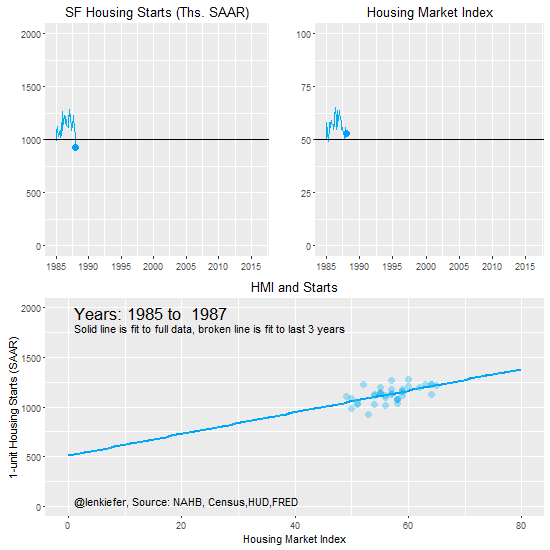

{% include JB/setup
The week ahead
Next week there are several data releases but the two that I’m paying especially close attention to are the NAHB/Wells Fargo Housing Market Index (HMI) and Housing Starts, part of the New Residential Construction joint release by Census and HUD.
Will builders maintain their sunny outlook?
The HMI is a diffusion index based on survey questions about homebuilder’s attitudes. Values of the index above 50 indicate that on balance, more respondents feel positive than negative about the current conditions in and direction of the single-family housing market. During the crisis the index plummeted, reaching a low of 8 in 2009. Subsequently the index has recovered and has been above 50 for 20 consecutive months dating back to July of 2014.

Will construction match sentiment?
Later in the week we’ll get housing starts data. Housing markets are heating up due to low mortgage rates and solid job gains, but have been held back due to a lack of inventory. Multifamily construction has been very strong, but the single family sector has languished. Single-family starts have been trending higher, but the pace of improvement has been slow. We are still well below the historical average pace.

Historically, the Housing Market Index has correlated quite strongly with single-family housing starts, but that trend has broken down recently. Despite the resurgence in sentiment reflected in the HMI numbers, actual construction has lagged. The chart below shows the correlation of the HMI and single-family starts. The relationship has weakened recently. We’ll be looking to see if actual construction rises to match sentiment, or if building continues to languish.

Data in motion
The animated gif below shows how the relationship between starts and the HMI has varied over time since the HMI series begins back in 1985. The animation makes clear that the past few years represent a break from the historical relationship between sentiment and construction.
